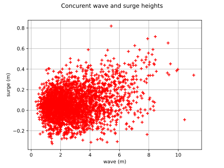
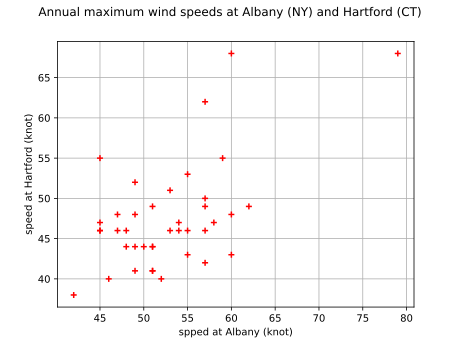

DrawUpperTailDependenceFunction¶
(Source code, svg)
{kind=link}

- DrawUpperTailDependenceFunction(data)¶
Draw the upper tail dependence function.
The function is defined in Tail dependence coefficients. It is estimated from data.
- Parameters:
- sample2-d sequence of float
Bivariate sample
- Returns:
- graph
Graph The graph of the function
![u \mapsto \chi(u) = \lambda_U(u)]() .
.
- graph
Examples
>>> import openturns as ot >>> sample = ot.FrankCopula().getSample(100) >>> graph = ot.VisualTest.DrawUpperTailDependenceFunction(sample)
Examples using the function¶

Estimate tail dependence coefficients on the wave-surge data
Estimate tail dependence coefficients on the wave-surge data

Estimate tail dependence coefficients on the wind data
Estimate tail dependence coefficients on the wind data